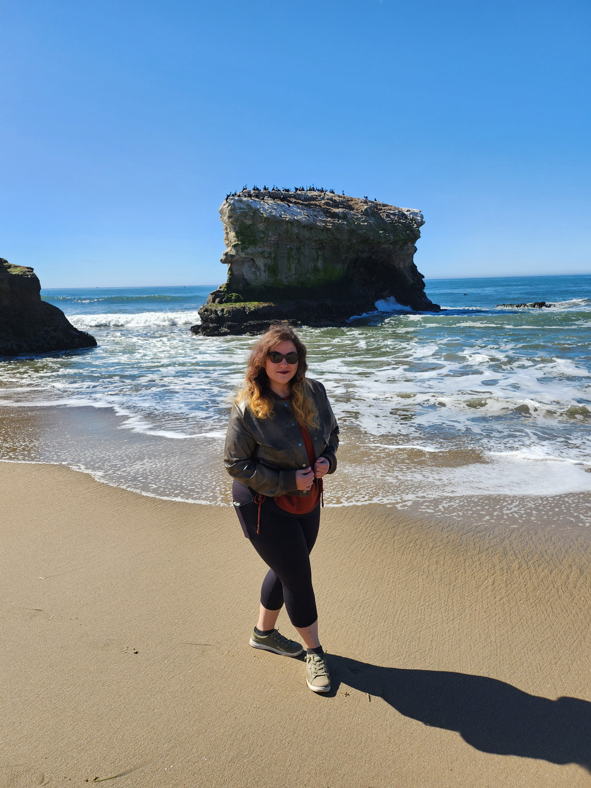

About Me

Natural Bridges State Beach, Santa Cruz, CA
Programmer | Photographer | Artist
I am a driven and passionate Computer Science alumni. I have a strong foundation in logical and analytical thinking. When approaching challenges, I contribute powerful solutions through my efforts to learn continuously. I thrive in team-oriented and solo-working environments because of my background in the Bachelor of Innovation program. In the program, I effectively developed the skills required to communicate, organize, and actualize ideas to drive change.
Writings
Personal Statement
In nature, the rain brings progress and new life. While rain gives plants the nourishment to grow
deeper into the soil and sky it also provides seedlings with the chance to sprout. For me rain is
refreshing and my favorite kind of weather. Light misty rain provides the best conditions for a
relaxing neighborhood walk that I use for deep thinking. The cool air motivates me by providing
fresh inspiration.
One of my favorite metaphors about rain is “it is raining like cats and dogs out there”. When I
hear this metaphor, I think of opportunity. All around us in the world are opportunities that are
raining like cats and dogs. Opportunity is everywhere, we just need to grab a bucket and collect
the rain. My optimism, adventurous spirit, and passion are my opportunity collection bucket.
Large amounts of rain help improve the quality of the air around us by cleansing the air as it
falls. Like the heavy rain, I strive to improve the quality of “air” around me through my ideas
and innovative solutions. As the rain falls particles are captured and I can be collected in buckets
of opportunity. Similarly, I take things from my environment and bring them to my opportunities
to make the “air” around me better.
Puddles and rivers of opportunity from large rain collects into lakes and the vast ocean. My
bucket of collected opportunity is smaller than a lake or an ocean but it can eventually grow and
flow into greater opportunity. I can take my bucket of water to become greater through my hard
work ethic. Everything is connected and I want to be a part of a larger body of water of collected
opportunity that is bigger than myself.
Innovation Development Essay
"The vitality of thought is in adventure. Ideas won’t keep. Something must be done with
them.”
-- Alfred North Whitehead, 1861-1947. From the series of Great Ideas
If an idea can be used to create good in the world, then as Alfred Whitehead says,
“something must be done with them”. As an innovator, I believe that the good impact of ideas
will fade into the fabric of the universe unless they are implemented into action to create impact.
Action, in my confidence, can only be accomplished by a human being. However, in the age of
technology, it is a misconception that all the ideas in the world have already been thought of as
information is only a few clicks away. There is also a misconception that there is no need to
come up with new ideas because artificial intelligence can “make” ideas for us.
Looking to the future, I am concerned that impactful ideas are dwindling as we rely upon
technology. Our reliance on technology, I fear, stops us from thinking for ourselves. It is
becoming easier for us to use the ideas and the step-by-step tutorials from the internet and label
them as innovation. We find it commonplace in our world today to use the information on the
internet we are exposed to as a replacement for incubating new ideas. Nevertheless, I have a
vision for a future that despite our reliance on technology, we can still benefit from the good that
comes from implementing ideas that can only be created by the human mind. My vision includes
the good we bring to the world through using ideas we come up with to solve complex problems,
improve our quality of life, and advance our society.
We all know that not every problem we are up against fits into a cookie cutter or a
predesigned mold. Many of the biggest problems we face are unique in nature with differing
nuances to navigate. If we rely on using technology alone, we can only present a problem with
solutions that already exist. However, the human brain can craft solutions with a thinking process
that can only come from life experiences, which cannot be replicated by a machine. Therefore, I
still envision a future where human problem-solving skills are still relevant. I also perceive the
future where we use technology as a tool to get started in our own innovation when it is applicable.
Not all of technology is bad, but I think we will need to reach a point where we know
when to turn away from technology and use our brains.
Since computers cannot see what is good or what can be improved in life, I can see a
future where our most impactful innovations are based on human intuition. We are unreplaceable
in the regard that only we can see from a human perspective. Our perspective gives us an
advantage to amplify the good that is already in existence and improve upon it. A computer will
only “see” the limited perspective of the human condition provided to its database. There is an
inherent limit on the amount of learning a machine can experience because it does not experience
life. Thus, a machine cannot comprehend all the details that a person can intuitively see and act
upon. My vision includes using human intuition to understand where our weaknesses lie and
improve our daily lives as a result.
Lastly, I envision human-generated ideas in practice being put to work towards advancing
society. I feel strongly that we can use the human capabilities of compassion and
conscientiousness to break out of the box and enhance society as an entirety. Society has vastly
more connections than any technological system in existence, making it intricate and complex. In
perspective, it takes large groups of people to make impactful changes to society. Therefore,
innovation on the level of advancing society is far too complex to be simulated by a machine or
generated with a list of to-dos. It is crucial that for us to progress as a society we must create our
own ideas and work together, and I have a vision that we will.
The bottom line is that innovation does not have an impact if we are consulting
technology for every idea we have. Nonetheless, technology does have its place in helping
provide us with resources to start or further our ideas. I ultimately believe we must be the ones to
decide which ideas are created to make the greatest and most positive impact possible. We cannot
expect there to be progress in innovation without putting forth effort into our ideas because in
innovation there are no shortcuts or substitutes for the human mind. As a result, if we seek true
innovation then we must never forget to think for ourselves to bring our ideas into impact and
that is my vision for the future.
Projects
Team Projects
Airsoft Event Calendar
Contributed to the development of a Colorado-based Airsoft Event Manager Site using the Django web-framework. The site was designed for airsoft community to have a centralized location to store events for different clubs and organizations.
Play to Remember LLC
Provided consultation to the Play to Remember LLC startup. Play to Remember is a small business that creates games and products for patients living with Alzheimers. As a part of the consultation we created a Lean Business plan with research on material distributors, cost/market analysis, and eCommerce site hosting. The business plan also included product launch and promotion activities.
Boreas Dry Ice Cleaning
Conducted research and compiled for the startup Boreas Dry Ice Cleaning. Research included the environmental impacts and mitigation for cleaning vintage cars. The team also planned an upstairs garden for recycling of CO2 gas.
Forevergreen LLC
Provided consultation and app testing for Forevergreen Tech LLC. The app gameified environmentally friendly everyday tasks to create fun way to make eco lifestyle changes through community.
Utility Patent
A Mock Utility Patent Application for a snow removal system.
Mailed Paper Filings consisted of...
- Certificate of Mailing (Form SB0092)
- Utility Patent Application Transmittal (Form AIA0015)
- Application Data Sheet (Form AIA0014)
- Field of Invention
- Description of Related Art (Information Disclosed Under 37 CFR 1.97 and 27 CFR 1.98
- Vector Drawings of the system
- Claims
- Declaration of Inventors (Form AIA0001)
501c-3 Proposal
Created a mock proposal for the Australian Marine Conservation Society to gain funding for implementing a new education program for the community. The proposal followed the process exhibited with 501c-3 Non-Profit organizations.
Solo Projects
Photo Sharer (In-Development)
A website that allows guests to an event/wedding to share photos from their phone. Photos are then put into a new scrapbook that can be downloaded. All Art is created digitally by me.
Simulators
Cache Simulator: A C program that simulates a simplistic design of the caching
system of an L2 cache. The simulator follows the hig-level caching
process.
Insturction Pipeline Simuator: A C program that simulates the instruction pipeline by taking
in a string of an instruction and performing the 5 stages of
the pipeline. (Fetch, Decode, Execute, Read/Write Back) Based
the parsed instruction fed in through a text file. The ouput is
written back into a CSV file in a chart format.
Temperature w/ Arduino
A small scale Arduino system that detected the temperature and turned on a fan once the temperature rose above 80 degrees fahrenheit.
Photography
Experience/Skills
Programming Skills
Languages
- Python
- Java
- C/C++
- HTML5
- CSS3
- JavaScript
- CLisp/Scheme
- SQL/SQLite
- Risc-V
Operating Systems
- Windows
- macOS
- Unix/Linux
Frameworks
- Django
- Bootstrap
Tools
- Docker
- Jupyter Notebook
- MovaviVideo Editor
- Wireshark
- xampp
- Git/Github/Gitbash
- Visual Studio Code
- Eclipse
- Netbeans
More Tools
- Notepadd++
- Vim
- Canva
- Figma
- Adobe
- Microsoft Office
- iWork
- Google Workspace
- Slack
- Discord